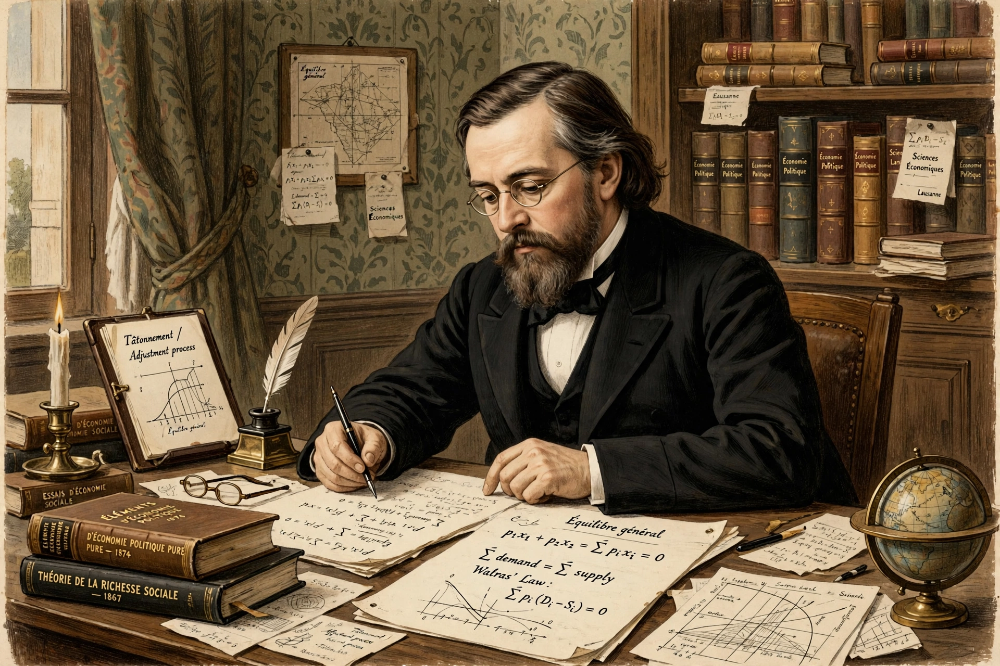

Marie-Esprit-Léon Walras (1834–1910) was a French mathematical economist, a founder of the marginal revolution and the creator of general equilibrium theory.
Appointed to the chair of political economy at the University of Lausanne in 1870, Walras published Elements of Pure Economics (1874–77), modelling an entire economy as a system of simultaneous equations in which supply and demand in all markets clear together. His process of tâtonnement ("groping") described how prices adjust toward equilibrium, and "Walras's law" states that excess demand across all markets sums to zero.
Along with Jevons and Menger, Walras founded marginal utility theory. Joseph Schumpeter called him "the greatest of all economists". See General equilibrium theory and Lausanne School.